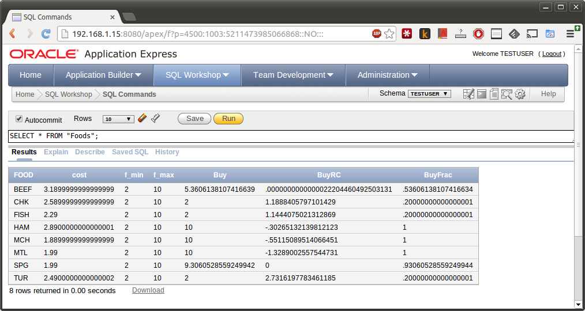

Connecting AMPL to Oracle¶
To use Oracle with AMPL, you need to have the Oracle ODBC driver installed and to have access to a database server, which could be either local or remote.
Installation¶
GNU/Linux¶
Debian-based distributions¶
The following instructions apply to Debian and Debian-based Linux distributions such as Ubuntu and Mint.
Download RPM packages of Oracle Instant Client for your Linux platform from the Instant Client Downloads page. You will need the Basic and ODBC packages. In the Usage example we also use
sqlplusfrom the SQL*Plus package.Install dependencies:
sudo apt-get install alien libaio1 unixodbc-dev
Convert packages from RPM to DEB format:
sudo alien oracle-instantclient*.rpm
Install the packages:
sudo dpkg -i oracle-instantclient*.deb
Add the Oracle library directory to the library search paths:
echo /usr/lib/oracle/*/client*/lib | sudo tee -a /etc/ld.so.conf sudo ldconfig
Register the ODBC driver:
sudo /usr/share/oracle/*/client*/odbc_update_ini.sh / /usr/lib/oracle/*/client*/lib
Create a symbolic link for
libodbcinst.soonx86-64:sudo ln -s /usr/lib/x86_64-linux-gnu/libodbcinst.so \ /usr/lib/x86_64-linux-gnu/libodbcinst.so.2Use the following command with the
x86version instead:sudo ln -s /usr/lib/i386-linux-gnu/libodbcinst.so \ /usr/lib/i386-linux-gnu/libodbcinst.so.2Set the
ORACLE_HOMEenvironment variable:export ORACLE_HOME=<installation-dir>
replacing
<installation-dir>with the actual installation directory, which can be printed with the commandecho /usr/lib/oracle/*/client*.Alternatively you can add the line
ORACLE_HOME=<installation-dir>to~/.pam_environmentto set this environment variable permanently for the current user. Use/etc/environmentinstead of~/.pam_environmentfor system-wide environment variables. See also Persistent environment variables.
Go to Usage.
Other distributions¶
Install unixODBC following these instructions.
Download and install Oracle Instant Client packages for your Linux platform from the Instant Client Downloads page. You will need the Basic and ODBC packages. In the Usage example we also use
sqlplusfrom the SQL*Plus package.Add the Oracle library directory to the library search paths:
echo /usr/lib/oracle/*/client*/lib | sudo tee -a /etc/ld.so.conf sudo /sbin/ldconfig
If the files
odbc.iniandodbcinst.iniare located in/etc/unixODBCinstead of/etccreate symbolic links:sudo ln -s /etc/unixODBC/odbc.ini /etc/odbc.ini sudo ln -s /etc/unixODBC/odbcinst.ini /etc/odbcinst.ini
Register the ODBC driver:
sudo /usr/share/oracle/*/client*/odbc_update_ini.sh / /usr/lib/oracle/*/client*/lib
If
/usr/lib/libodbc.so.1doesn’t exist create a symbolic linksudo ln -s /usr/lib/libodbc.so.2 /usr/lib/libodbc.so.1
Set the
ORACLE_HOMEenvironment variable:export ORACLE_HOME=<installation-dir>
replacing
<installation-dir>with the actual installation directory, which can be printed with the commandecho /usr/lib/oracle/*/client*.Alternatively you can add the line
ORACLE_HOME=<installation-dir>to~/.pam_environmentor to~/.bashrc(depending on your distribution) to set this environment variable permanently for the current user. Use/etc/environmentfor system-wide environment variables. See also Persistent environment variables.
Go to Usage.
MacOS X¶
Oracle doesn’t provide ODBC drivers for Mac OS X but you can get them from third-party companies such as OpenLink Software.
Go to Usage.
Windows¶
The ODBC driver for Oracle often comes installed by default on modern versions
of Windows. You can check if the driver is installed by running the ODBC Data Source
Administrator, odbcad32.exe, and looking for Oracle in the Drivers tab.

If the driver is missing, download one from OracleODBC Drivers Download Page (32-bit version) and install it. 64-bit version of the driver is available as a part of Oracle Data Access Components.
Usage¶
We’ll demonstrate usage of Oracle with AMPL on a small example. For this example we use the diet problem, which finds a combination of foods that satisfies certain nutritional requirements. It is described in Chapter 2 of the AMPL book.
We assume that you’ve already installed the Oracle ODBC driver using the instructions above and have access to a local Oracle database.
First download the data for the diet problem diet-oracle.sql and import it into an Oracle database:
$ sqlplus <username>/<password> @diet-oracle.sql
where <username> is the name of a database user and <password> is the
user’s password.
Then download the model file diet.mod and the script file diet-oracle.run.
The script file first reads the model:
model diet.mod;
Then it defines a parameter to hold a connection string. Since the connection
parameters are the same for all table declarations in our example, we
avoid unnecessary duplication. In this case we specify all the connection
parameters explicitly. Alternatively, you could use a DSN file name or
"DSN=<dsn-name>" as a connection string.
param ConnectionStr symbolic = "DRIVER=Oracle; SERVER=localhost;";
Replace Oracle with the actual driver name in the connection string above.
To find out the driver name on Linux, run the command odbcinst -q -d to
display the names of installed ODBC drivers on Linux
$ odbcinst -q -d
[SQLite3]
[Oracle 12c ODBC driver]
and select the one containing Oracle. In the example above it is
Oracle 12c ODBC driver. Note that the square brackets are not part of the name.
To discover the driver name on Windows, run the ODBC Data Source
Administrator, odbcad32.exe. Go to the Drivers tab where all the
installed drivers are listed and look for the one containing Oracle:
A driver name containing a semicolon (;) should be surrounded with
{ and } in a connection string, for example:
param ConnectionStr symbolic =
"DRIVER={Oracle ODBC Driver; version 6.01}; SERVER=localhost;";
Next there are several table declarations that use the ConnectionStr
parameter defined previously:
table dietFoods "ODBC" (ConnectionStr) "Foods":
FOOD <- [FOOD], cost IN, f_min IN, f_max IN,
Buy OUT, Buy.rc ~ BuyRC OUT, {j in FOOD} Buy[j]/f_max[j] ~ BuyFrac;
table dietNutrs IN "ODBC" (ConnectionStr) "Nutrients": NUTR <- [NUTR], n_min, n_max;
table dietAmts IN "ODBC" (ConnectionStr) "Amounts": [NUTR, FOOD], amt;
Finally the script reads the data from the tables
read table dietFoods;
read table dietNutrs;
read table dietAmts;
solves the problem
solve;
and writes the solution back to the database:
write table dietFoods;
Note that the same table dietFoods is used both for input and output.
Running the diet-oracle.run script with ampl shows that data connection
is working properly and the problem is easily solved:
$ ampl diet-oracle.run
MINOS 5.51: optimal solution found.
13 iterations, objective 118.0594032
You can use various database tools such as Oracle SQL Developer IDE, Oracle Application Express, or sqlplus to view the data exported to the database from the AMPL script:
SQL statements¶
The identifier quote character in Oracle the ANSI standard quote character (").
AMPL’s ODBC table handler detects the quote character automatically and uses it
when necessary. However, user-supplied SQL statements are passed to the Oracle ODBC
driver as is and should use the correct quotation.
Example:
table Foods "ODBC" "DRIVER=Oracle; SERVER=localhost;"
'SQL=SELECT "FOOD", "cost" FROM "Foods";': [FOOD], cost;
DSN Example¶
The following example shows a DSN entry in the odbc.ini file that
can be used to connect to a remote Oracle Express Edition (XE) database:
[Diet]
Driver = Oracle 12c ODBC driver
ServerName = <server-ip-or-hostname>
Database = XE
DSN = Diet
Port = 1521
UserID = <username>
Password = <password>
The DSN can be used in an AMPL table declaration as follows:
table Foods "ODBC" "DSN=Diet;": ...
Troubleshooting¶
This section lists common problems with possible solutions.
The first thing to do in case of an error is to get additional information.
Add the option "verbose" to the table declaration that causes the error,
for example:
table dietFoods "ODBC" (ConnectionStr) "Foods" "verbose":
...
Then rerun your code and you should get a more detailed error message.
Data source name not found¶
Verbose error:
SQLDriverConnect returned -1
sqlstate = "IM002"
errmsg = "[unixODBC][Driver Manager]Data source name not found, and no default driver specified"
native_errno = 0
If the data source name (DSN) was not found as in the example above, check if it is spelled correctly in the connection string. If you are not using a DSN, check the driver name instead. On a Unix-based system you can get the list of installed ODBC drivers using the following command:
$ odbcinst -d -q
On Windows use the ODBC Data Source Administrator (see Usage).
If the driver name contains a semicolon (;), check that the name is
surrounded with { and } in the connection string, for example:
table Foods "ODBC" "DRIVER={Oracle ODBC Driver; version 6.01}; DATABASE=test;":
...
Driver’s SQLAllocHandle on SQL_HANDLE_HENV failed¶
Verbose error:
SQLDriverConnect returned -1
sqlstate = "IM004"
errmsg = "[unixODBC][Driver Manager]Driver's SQLAllocHandle on SQL_HANDLE_HENV failed"
native_errno = 0
This error may occur if the ORACLE_HOME environment variable is not set.
OID generation failed¶
sqlplus prints the following error message:
ORA-21561: OID generation failed
Make sure your hostname and the name associated with IP address 127.0.1.1 in /etc/hosts
are the same:
$ hostname
your-machine
$ grep 127.0.1.1 /etc/hosts
127.0.1.1 your-machine